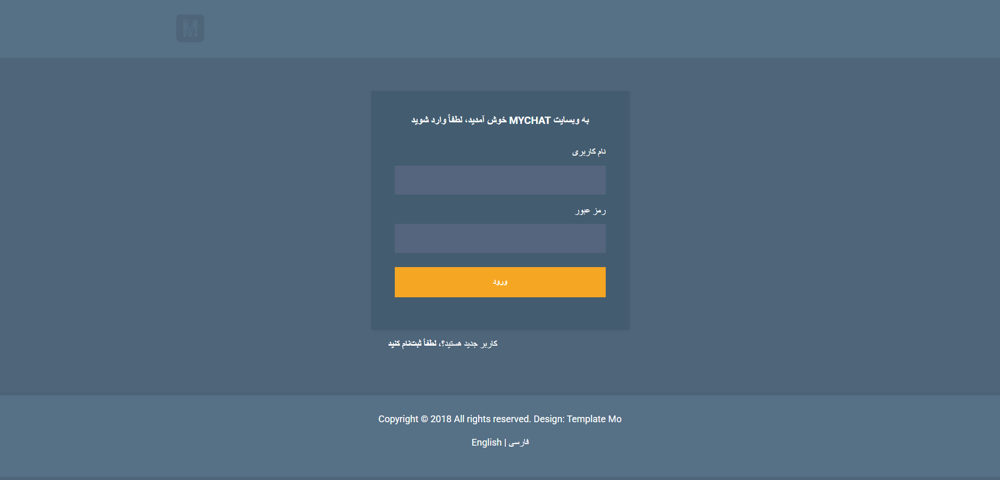
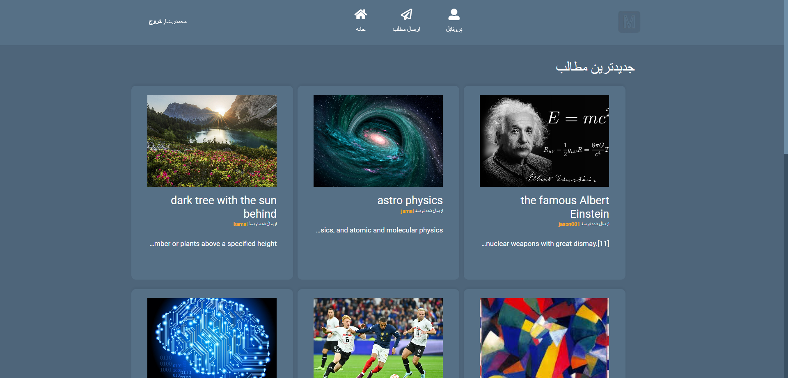

Project Overview
During my internship at Goldis Co. from June to September 2024, I had the opportunity to expand my web
development skills by working with Python Flask, HTML, CSS, and JavaScript to create a functional
prototype website.
The project focused on developing a Post Management System that allowed users to create, edit, and manage
posts in a web application environment.
Technical Skills Acquired
- Backend Development with Flask: Designed and implemented the server-side logic
using Python Flask framework, creating RESTful APIs for post management operations.
- Frontend Development: Developed responsive user interfaces using HTML, CSS, and
JavaScript to ensure a seamless user experience across different devices.
- Database Integration: Implemented data persistence using SQLite database with
Flask-SQLAlchemy for efficient data management.
- Form Handling & Validation: Created and processed web forms with proper input
validation and error handling.
- Version Control: Utilized Git for version control throughout the development
process, maintaining a clean commit history.
Technical Implementation
The prototype website featured:
- User authentication and authorization system
- CRUD (Create, Read, Update, Delete) operations for posts
- Responsive design that adapts to different screen sizes
- Clean and intuitive user interface
- RESTful API endpoints for post management
Project Screenshots

Login page of the Post Management System with bilingual interface

Content management interface showing post creation and listing
functionality
These screenshots demonstrate the bilingual interface (Persian/English) and the post management
functionality I implemented during my internship.
Project Repository
The complete source code for this project is available on GitHub:
https://github.com/mrmalekjan/PostWebsite
Through this internship, I strengthened my skills in web application development and gained valuable
experience working with the Flask framework, which complements my existing expertise in control systems
and machine learning engineering.